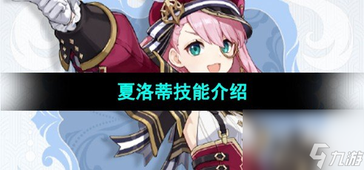
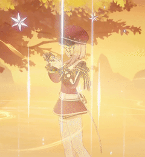

夏洛蒂技能一览
在《原神》的4.2版本中，新增了一位四星冰元素角色"夏洛蒂"，
她被定位为法师，并在大世界探索中拥有一些独特的机制。现
在让我们来了解一下关于夏洛蒂技能的爆料消息，为玩家们提
供对这个全新角色的更深入了解。一起来看看吧。

《原神》夏洛蒂技能介绍
-
普通攻击：冷色捕捉使用相机瞄准目标进行最多3次连续攻击；
-
下落攻击：收集冷冻之力，夏洛特向地面猛冲对路径上的所有敌人造成伤害，并在落地时造成范围伤害。
-
元素战技：冰点构图
-
元素爆发：夏洛特创建一个验证场景对方位内造成冷冻伤害，为全体队友回复生命值
